Objects with
a sense of place.
A considered introduction to Chinese ceramics, the living craft culture of Jingdezhen, and the people and places behind each encounter.
Porcelain · Culture · Experiences
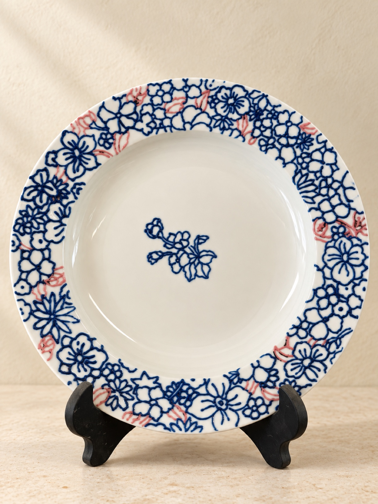
Curated Ceramics
Forms, glazes and details that invite a slower look. A small visual selection of ceramics from our recent explorations.
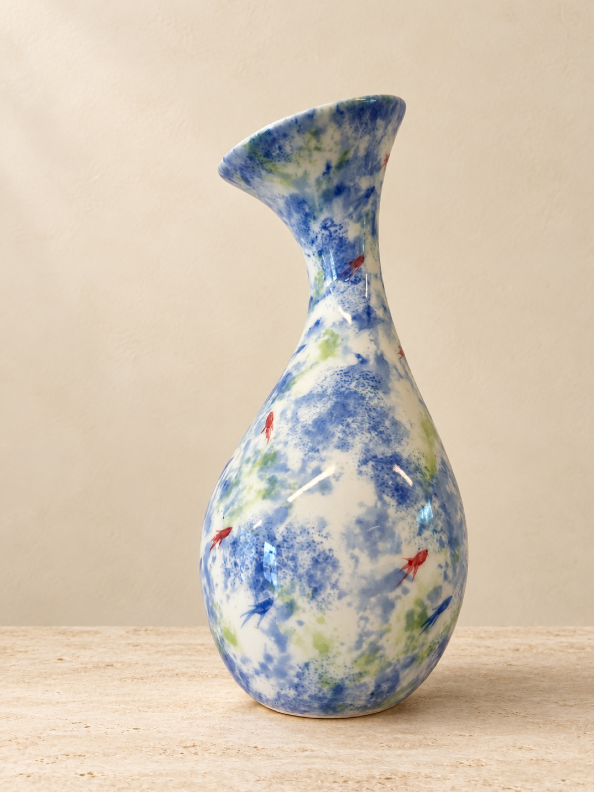
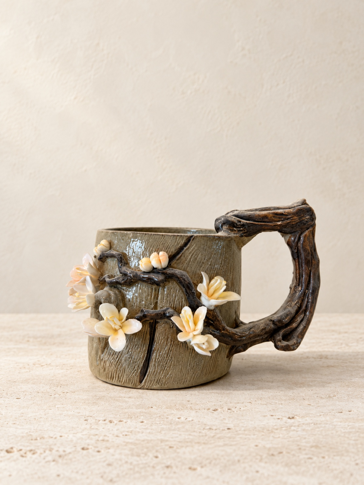
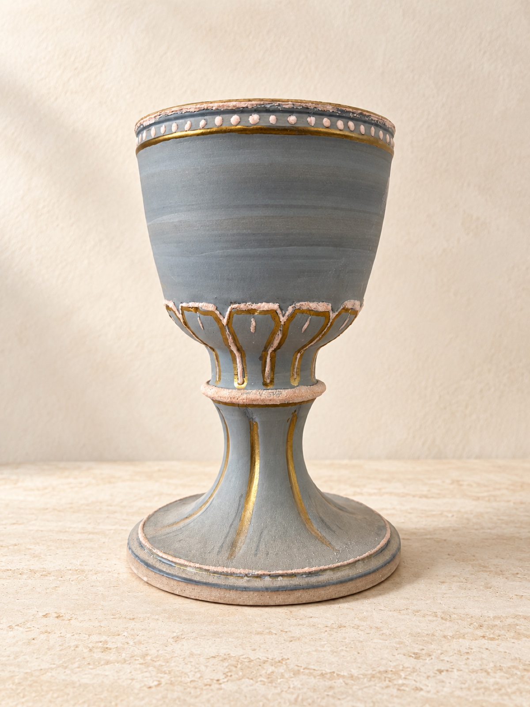
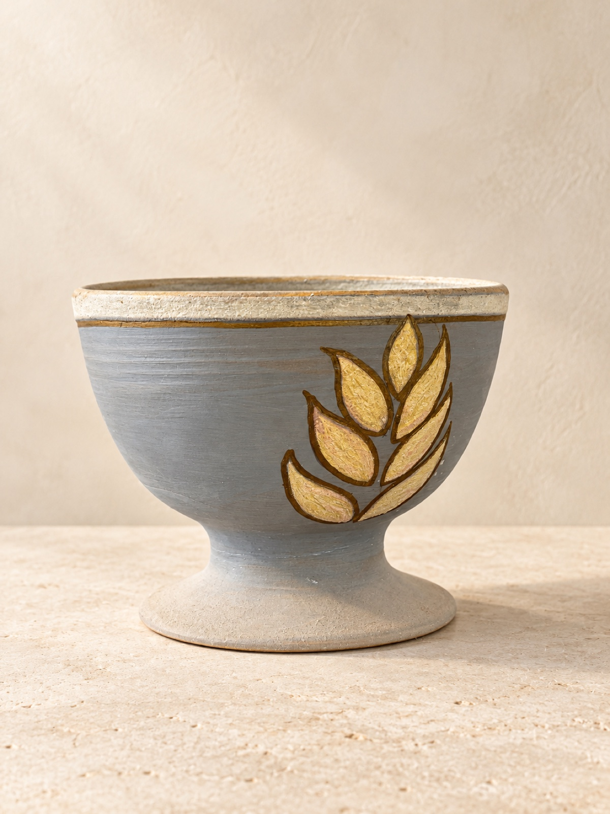
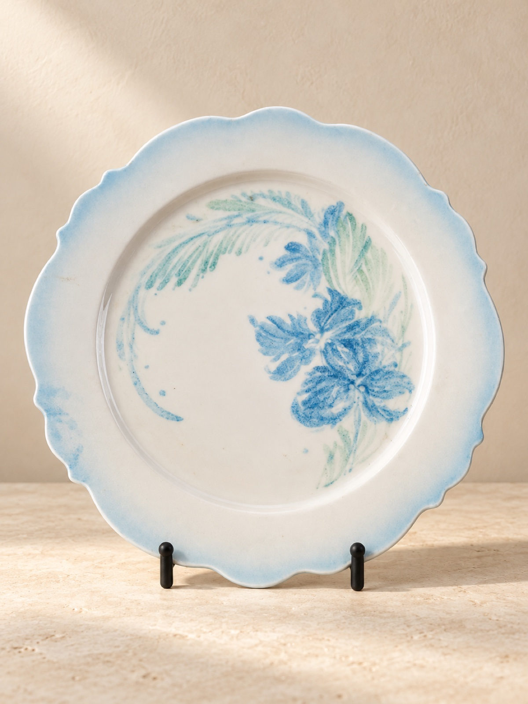
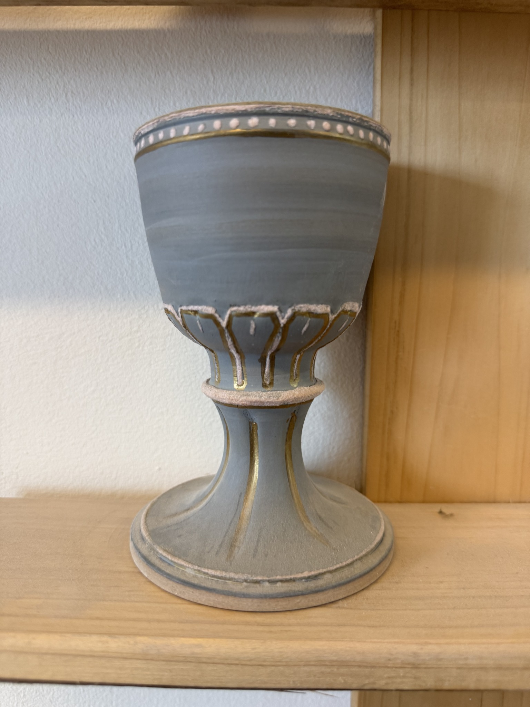
Tradition, still in motion.
Jingdezhen has long been closely associated with Chinese porcelain. Here, ceramic culture is more than an object on a shelf: it lives in studios, shared knowledge, everyday tools and an ongoing conversation between heritage and contemporary life.
JING ATELIER is here to make that world more approachable—through considered objects, thoughtful stories and connections to local ceramic experiences.
The JING ATELIER perspective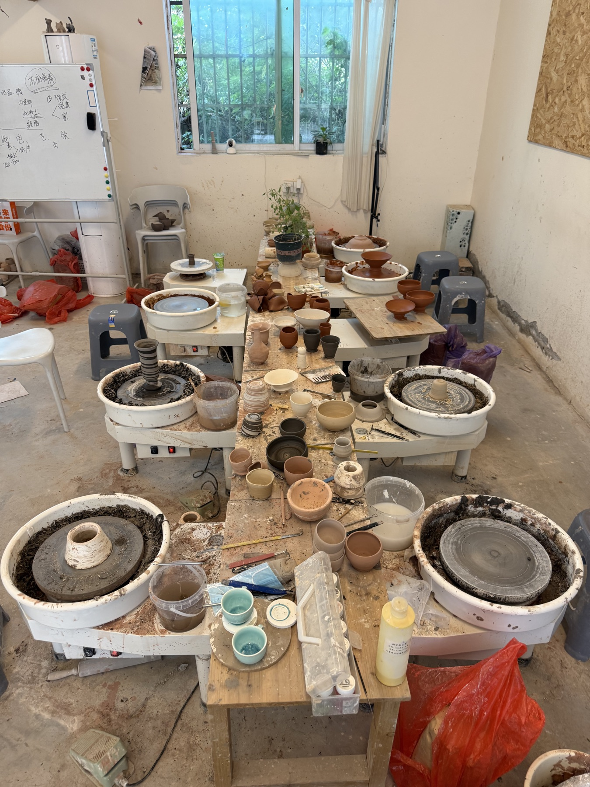
Onsite pottery teaching in Jingdezhen.
We offer onsite pottery teaching for visitors, students and international residents in China who want to experience ceramics in Jingdezhen.
- Learn in a working ceramics studio
- Get familiar with the pottery wheel and studio setting
- Ask us about arranging an experience around your visit
Message us with your dates, group size, interests and language needs. We will discuss the details and confirm availability with you.
Ask about an onsite session ↗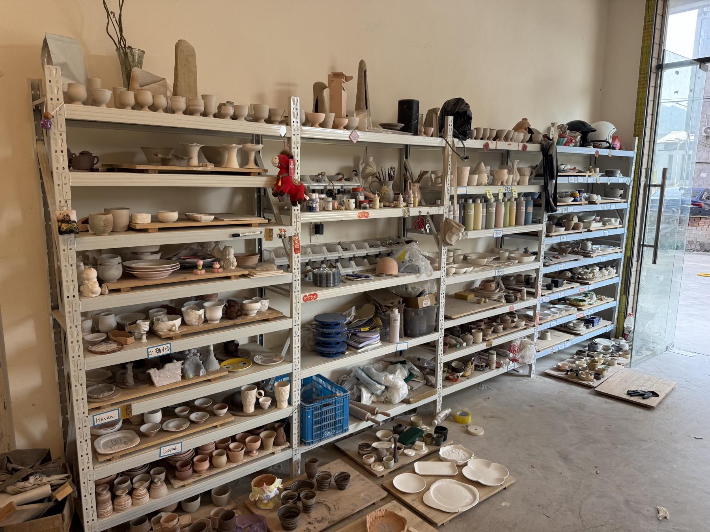
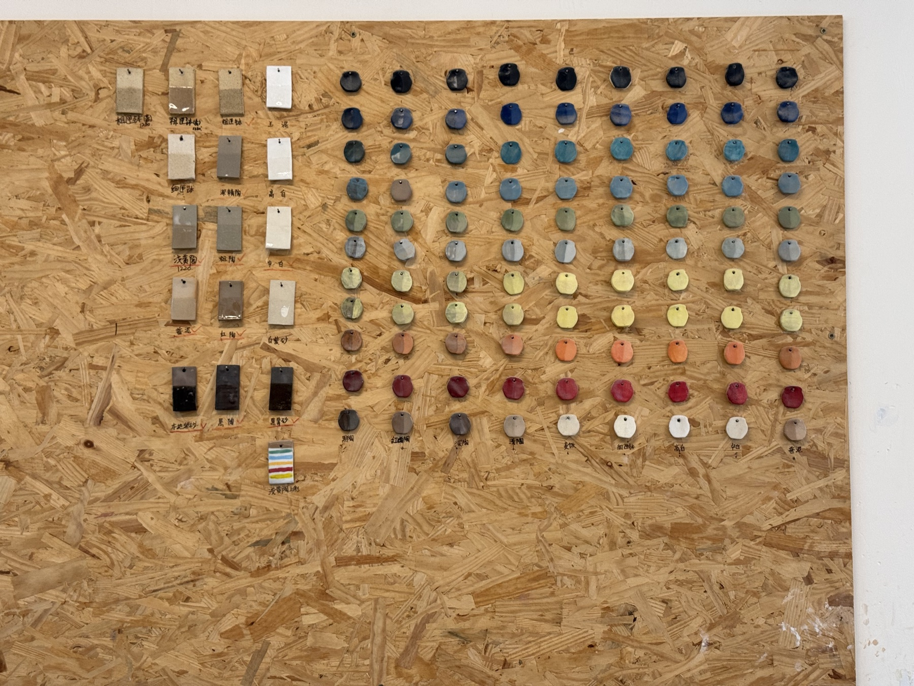
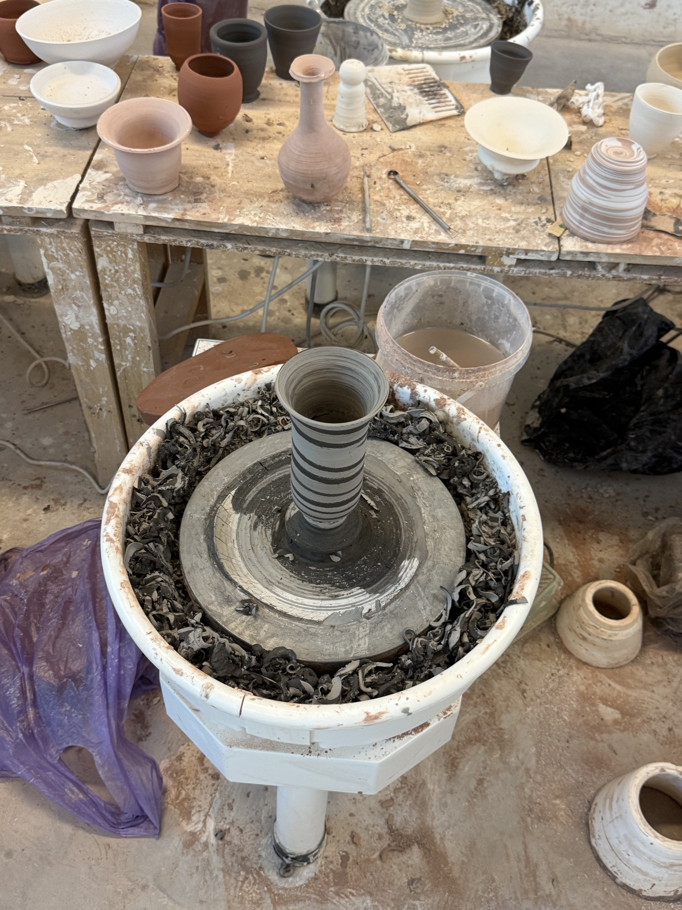
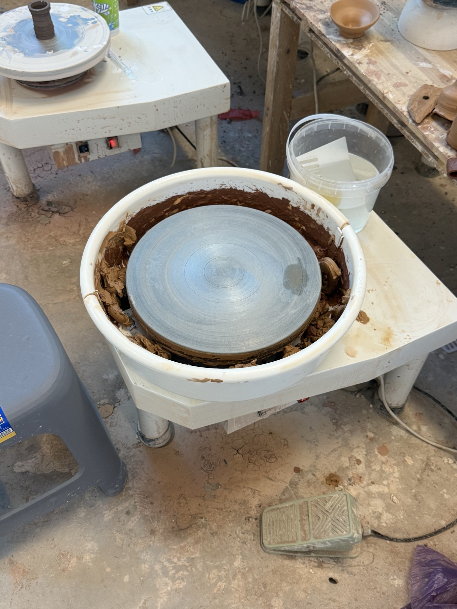
JING ATELIER
JING ATELIER is an independent window into Jingdezhen ceramics and Chinese ceramic culture. We bring together a curated view of ceramic objects and stories, and help curious visitors discover local experiences in and around Jingdezhen.
We believe a meaningful encounter with craft begins with looking closely, asking good questions and meeting the places where knowledge is shared.
Curious about a piece, a place, or a visit?
We would love to hear what you are looking for.
Message @jingzuoatelier ↗